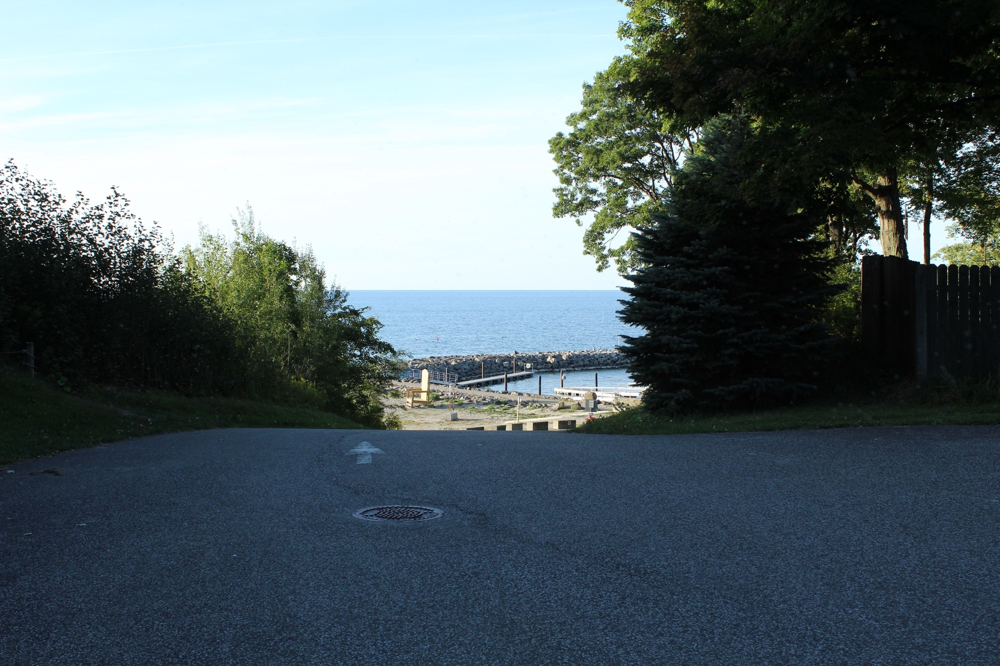
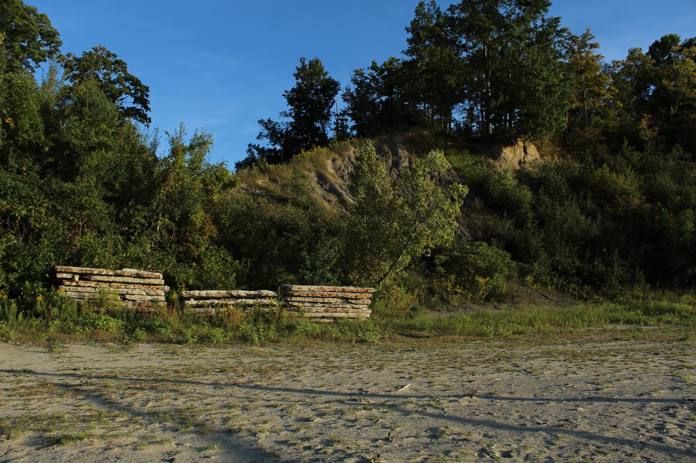
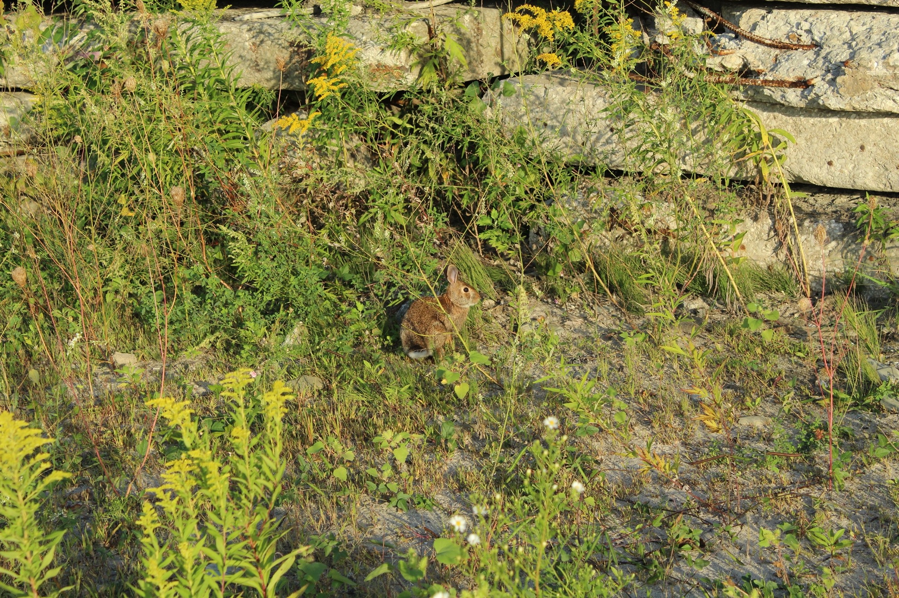

Protecting Our Beaches

“The puzzling aspect of such situations is that the existence of obligations over and above self-interest is taken for granted in such rural community enterprises as the betterment of roads, schools, churches, and baseball teams. Their existence is not taken for granted, nor yet seriously discussed, in bettering the behavior of the water that falls on the land, or in the preserving of the beauty or diversity of the farm landscape. Land use ethics are still governed wholly by economic self-interest, just as social ethics were a century ago.”-Aldo Leopold’s “The Land Ethic”
Shades Beach Park in Harborcreek, Pennslyvania, is an example of how community spaces can evoke environmental concern and social responsibility. This park has been a space for the Harborcreek community to go, relax, play, swim, or hike. I have been consistently returning to this park ever since I was a teenager, and it refreshing to see the growth and investment the community has put into this beautiful place. The following is a photo collection that features the typical pathway through the park. Each photo reflects on Aldo Leopold’s insights about obligations beyond self-interest when considering the environment.
07/29/2017 – Shades Beach with Friends
The two images above are old images of my friends and I at Shades Beach. The wooden bench was removed and is no longer there; however, it was much enjoyed by the community. This highlights how meaningful the park is to the community and the need for it to be preserved for generations.
Entrance to the Beach/Boat Launch
The pathway begins at the short distance to the boat launch and beach area. This picture encapsulates the direction one would follow and the appearance of the rocks and boat launch ahead. This image symbolizes community engagement as local residents gather here to enjoy the lake and shared activities.
PHOTO TO BE ADDED Wooden Post with Litter Baskets
This photograph depicts a wooden post with a message about taking a basket for litter collection. This signifies the need to maintain the park and environment, and it encourages visitors to participate in these actions.
“I Love HC” Monument
The “I Love HC” monument highlights community pride and identity. This extends into the need of more ethical awareness about the environment that sustains it. With this monument being in Shades Beach Park, one may consider a commitment to protecting the beauty of the landscape.

Rocks for Erosion Prevention
This picture features the rock barrier landscape, and my boyfriend picking up litter located on these rocks. Both portions of the photo present a proactive stewardship of the park’s shoreline. Environmentally, these rocks are needed to prevent erosion and protect the beach for future generations. In addition, picking up litter off the beach highlights the need to protect the park’s biodiversity.
PHOTO TO BE ADDED Beach Scenes with People
Description to be added
Cliff Area with Stacked Cement Slabs
Description to be added
Bunny within the Greenery and Cement
Description to be added
Conclusion; description to be added